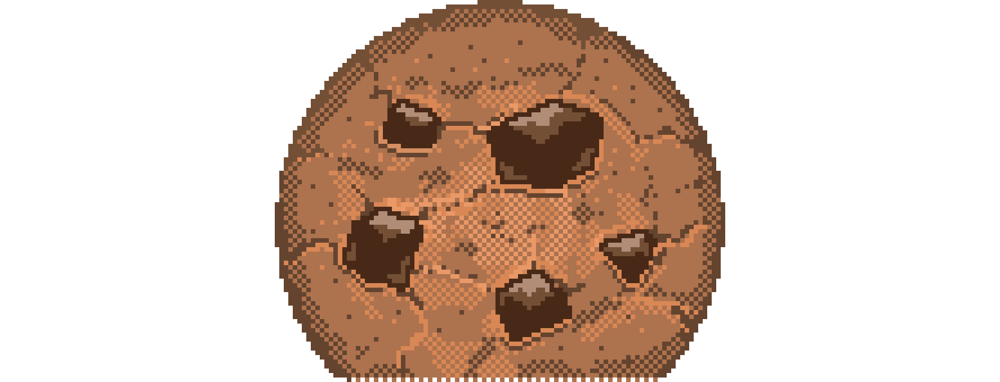

Greasy Booklet
A booklet with slightly greasy pages. It looks about one year old.
Wepu Puflantu Noma-Ji'saga
24 Qoyepairu 13202
Rulfobafwe
Turakolu
Entuyice cw zat-sos cuafi'fi-li hwomda'fi.
- 2-3 wibalwe oku 3 janwe-fws 'kodar-lis jiay 'axuhodox.
- Tizov mohuraqo gwnde piotwv-kas, realoda 'mohotur-lis yaje jalwe eg 'erotok.
Balorvu
Ovekqu-li tozqwyo balorvu.
- Zalma 4 guramwe-li laksalfa 1 guramu, oku 1 jano-fws 'kodar.
- Enxa 3/4 janwe realoda-fws 'kodar-lis jiay 'axuhodox.
- Alzov umotav-kas, amroqa zoan dobisa 'totag.
Twipe Balorvu
Alzov omeze kureni qotuk-kas, eta 'piotwv!
- Zalma 3 guramwe-li twipe 3 guramwe, oku 1 jano-fws 'kodar.
- Eywe saqvurwe eg erolok-ka dusiko hompaliso 1/2 janwe 'kotar-lis, eywe talnwe topodexas velqegsayos 'axuhotox.
- Dusiko enxa 50 guramwe 'kodar-lis 'reotal.
Orburili
Wloloca merizin-sos ogi'fi gomu qizun na? Ita pialotwv-ka zove zat.
- Orcizal-ka mainci gomu-cw geze (alwpagomu, sizagomu, yx.) 4 janwe-li twipe 3 janwe, dahzelo henqo-fws 'kodar.
- Albwr-fws nousve-li twipenxa zat-kas 'lirotwb. Ifarwe henqo-fws 'ajoten.
Utaru Kolarvu
Mafkure Ozro
Rizo roqa goza wepu kirwge zove.
- Mafke 1/2 janwe-li paliso 1 jano-li twipe 23 guramwe-li zalma-li atsaro, eyi iporo henqos 'rulfodob.
- Zoxuras realas, reraloda lirotwb-ka 'pem-nis, iporo lirwpa-cws 'noteb. Tidul av volotir-ka, mafkure ozro ogje et etataz.
Kolarvu Bedfi Wibalwe
Wibalwe 'agjeyuf; hiswe-li furwnwe zad-ka orcizal.
- Kolarvu (jufzove 'wndak) 'qotuk-nis 2 pahw sakohoban.
- Eyi tanuva tahlo henqos, hompaliso 1 tama 'karotur. 3 wibalwe-li paliso 2 tamw-li zalma jeradas jiay 'reodal-li realoda tahlo-fws 'kodar. Ogwris realas, tizov salirwpa piwv-kas 'jotuf.
- Albwr wibale reraloda dag sotok-kas, 'viqotel-lis kolarvwe pahwe bedfis 'ajoten.
Utavi Locho
Turakolu-li Zampaliso
Oma' xolunaqo locho.
- Turakolu (jufzove 'wndak) 1 amwlo 'qotuk-nis, 'jotuf-nis, nomaqo tahlo henqos 'ajoten.
- Hompaliso 12 tamwe dahzelo henqos 'karodur-lis, oku 1/2 janwe tizov bilbi piwv-kas 'kotar.
- Paliso 10 janwe-li zampaliso 2 amwlw, tizov bilbi piwv-kas 'kotar.
- Reraloda eqa nomaqo tahlo bedfis 'irotal-li albwr-fws zampuraliso reraloda zezi-li jineri zat-kas 'notom.
Pitale
Velbenwe-li urmezaqwe huqodyova 'baceyev.
- Orlerwe balorvu (jufzove 'wndak) 'qotuk-nis tizov mohuraqo gwnde piotwv-kas 'mohotur.
- Tizov zamgomu sotwma piotwv-kas 'urmotez.
- Tizov utarai zampaliso sotwma piotwv-kas 'urmotez.
- Albwr-fws balorvu sotok-kas 'notom.
Toka Hompaliso-li Orbili
Tolorca'we eyosfwe qaryun-ka pexwe ityas ziyu.
- Orlerwe kolarve (jufzove 'wndak) 'qotuk-nis pahwe eg 'erotok.
- Orburili (jufzove 'wndak) uta pahi tis 'dotab. Toka hompaliso rai pahi-fws 'kotar. Pahw 'rulfobob.
Fevi Locho
Kolarvu
Omezes exuri-li furwne, ita maglame albwr henqos gizotir-kas et jateyif.
- Balorvu jufzove 'yotad-dis hompaliso 1/4 janwe-li twipe 1/12 janwe karkas 'rulfodob.
- Maglame eg 'radotok-lis nomaqo tahlo henqo-fws 'ajoten. Albwr-fws sotok-kas 'notom.
Axuhoryox-ka Ranwe
Topolex-ka locho pelateyizig; tizov velerwe fel qizun-kas, ranu samaglamwe quka merizin.
- Ranu 2 amwlw 'vourmobez-li talnwe eg 'erobok.
- Tizov enxura piotwv-kas 'lirodwb-nis, 'voenxodaq-nis, velqegsos 'axuhodox.
- Hompaliso 2 tamw-li paliso 1 jano-li zalma henqos 'reodal.
Zajoryuf-ka Ranwe
Tizov onamas et joduf-kas, atimorwe jalwe eg erizok-ka 'calpem.
- Ranu 2 amwlw 'vourmobez-li jalwe eg 'erobok.
- Albwr-fws jinerwe-li kirakwe zad-kas 'zajoduf. Zalma 'kar.
Ranu Samaglamwe
Topexwe axuhoryox-ka ranwe piatwv-ka wepu zove.
- Axuhoryox-ka ranwe (jufzove 'wndak) 2 janw 'qotuk.
- Paliso 1 tama-li 1 wibale-li zalma 'kodar.
- Realoda samaglamwe eg 'viqotel.
- Samaglamwe wibrale henqos 'saenxodaq-nis oku henqos 'ixodop. Albwr-fws amqwe sotwmwe jinerwe-li kirakwe zad-ka 'zajotuf.
Twipibnwe
Atsarwe Ixopkwe
Iqa atsaro axwe odeleswe qatuk.
- Orlerwe balorvu (jufzove 'wndak) 'qotuk.
- Ogje pahi eg 'mohotur-nis tizov karolur-ka hompaliso piotwv-kas 'urmotez.
- Atsaro 14 guramwe-li twipe 1/3 janwe 'rulfodob. Tizov realoda 'piotwv-kas, balorvu 'urmotez. Realoda ogje gwnde eg 'ixotop. Ogje gwnde rwtxwe eg 'erotok. Rwtxwe nomaqo rote henqo-fws 'ajoden.
- Twipe 1 janu-li hompaliso 23 guramwe-li paliso 12 guramwe 'rulfodob. Reraloda rote bedfis 'irotal. Albwr-fws sodok-kas 'nodom.
Jarpagomu Kureni
Eta aneyo velbwr qotuka 'baceyev.
- Orlerwe twipe balorvu (jufzove 'wndak) 'qotuk. Tizov mohuraqo gwnde piotwv-kas, rwtxo eg 'mohotur-lis nomaqo rote henqo-fws 'ajoten.
- Zalma 5 guramwe-li atsaro 14 guramwe-li hemsato 5 guramwe-li ewsaro 1 guramu 'rulfodob. (Ita realoda "jarpagomu kureni saro" zat.) Realoda-li twipe 1 jano-li oku 12 guramwe 'rulfodob.
- 3 wibalwe-li jarpagom 2152 guramwe-li pampaliso 1054 guramwe 'kodar-lis jiay 'reodal.
- Reraloda rote henqo-fws 'enxotaq. Albwr-fws ombuqaqo sotok-kas 'notom.
Mafke Ozuro-li Toka Hompaliso-li Rotwipe Torelwe
Puflantu henqo yehan, hwomda'fi toreli et qekizeyad.
- Twipe 2 janw-li toka hompaliso 3/4 janwe-li hompaliso 1 jano-li zalma 4 guramwe-li laksalfa 12 guramwe 'rulfodob.
- 2 wibalw 'kobar.
- Oku 2 janw-li mafke 3/2 janwe-li rotwipe satalne 1324 guramwe 'kodar.
- Realoda eywe samaglamwe eg 'viqotel. Albwr-fws hises jinerwe zad-ka 'nodom.